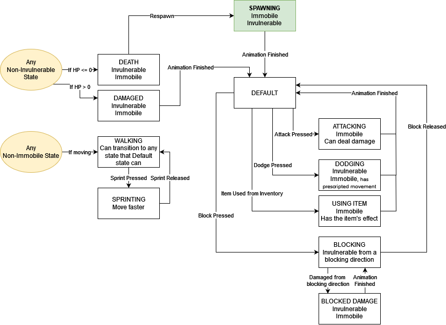
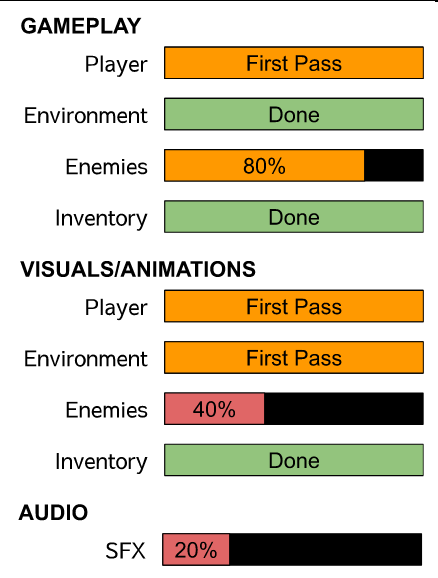

Silver Key - state machines
hi all,
its been 6 months since i released my last game, Vial Varmit, in october 2023. since then, ive started two projects: Silver Key, and untitled mouse game. both were conceived as low-intensity games that i would be able to finish quickly. both ballooned into projects that i wanted to give more time and care. while id really like to release regular, little games, i think it will be more productive to make what im passionate about. so, i've restarted Silver Key in 3d.
since this project is significantly more ambitious, im keeping a taskboard in GitHub. the tasks are organized into Phases, where Phase I is the initial prototype. i am going to release the Phase I prototype before the end of may.
whats In Phase I?
Silver Key Phase I features one small dungeon and a small section of overworld. in the overworld, the player can purchase goods from a merchant and store items. in the dungeon, the player will find three enemy types, as well as silver currency and other items.
the primary goal and most difficult aspect of this phase is making the player comfortable to control. the player can attack, run, dodge, block, and use items from their inventory. similar to other games ive made, the player uses a state machine. a state machine is a kind of diagram where every action a player can take has a list of properties and connections to other actions. for example, when the player dodges, they gain the intangible property- damage phases through them- until the dodge ends and they return to the default state. if the player attacks, they gain the property of dealing damage, become immobile, and can leave the state by either finishing the attack and returning to the default state, or by being damaged and interrupted, starting the damaged or possibly death state.
these states can get even more granular. youd likely want to separate an attack into three states, attack start, attack damage, and attack end. during attack start, the player raises their arm to strike. no damage is dealt during attack start as that wouldnt make sense. once attack start has ended, it leads into the attack damage state, followed by the attack end state. during the attack end state, the player may return to their default state or may initiate a combo. all of these states could potentially be interrupted by enemy damage, with different consequences.
this is the current player state machine:
this is the simplest state machine i could make for the prototype. in later phases, i will add more granularity, but im simplifying the number of states so that i can focus on making the transitions feel right.
current progress
the player actions, inventory, and dungeon are all implemented. enemies have some logic and simple pathfinding. one of the three intended enemies is in a playable state.
keeping a taskboard has been really useful. i thought it would be tedious as a solo-developer, but the board has made it easy to decide what tasks need to be done, and which tasks i should save for later. its also really encouraging to keep a list of completed tasks.
thats it for april! ill see you in a month when the prototype is complete!
- ciaran